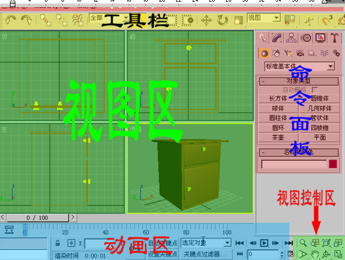

工作區域
3DMAX 主要分成如下 幾天區域 工具欄 (此欄很長 按下鼠標不放拖動可瀏覽被隱藏的工具) 視圖區 (G 顯示/隱藏 背景網格) 視圖控制區 控制 旋轉視圖等 命令面板 動畫區 
視圖區
3DMAX 提供了 4個視圖 頂 前 左 透視 用於用不同角度 觀察模型
視圖控制區
視圖控制區 提供了8個 功能用於 控制 視圖 (上面 4個 按鈕 分別用於) 縮放 縮放視圖 縮放所有視圖 縮放所有視圖 最大化顯示 在視圖中最大化顯示模型 所有視圖最大化顯示 在所有視圖中最大化顯示模型 (下面 4個 按鈕 分別用於) 視野 在透視圖中調整視野 在其他視圖中局部放大區域 平移 平移視圖 旋轉 用於選擇視圖 最大化視圖 切換到單個視圖(ALT+W)